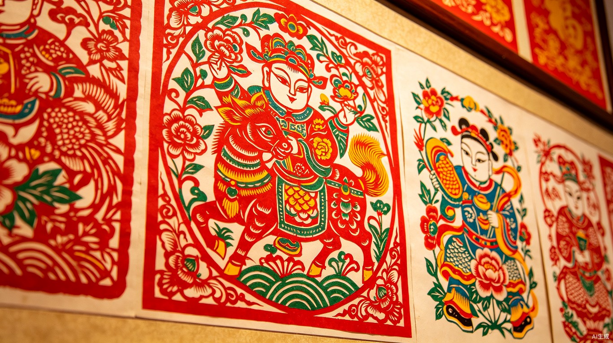

首页 > 收藏故事
收藏故事

藏品故事
2024-11-15
从窑火到案头：一件青花罐的百年旅程
阅读 1.2k
阅读全文 →

藏品故事
2024-10-28
铜钱里的时光：清代货币与胶东商贸
阅读 856
阅读全文 →

藏家故事
2024-09-12
玉佩传家：一位威海藏家的收藏哲学
阅读 1.5k
阅读全文 →

藏品故事
2024-08-05
民窑之美：胶东地区民间瓷器巡礼
阅读 923
阅读全文 →

藏家故事
2024-02-15
青岛藏家刘女士：玉器与书画的交融之美
阅读 1.1k
阅读全文 →

藏家故事
2024-01-08
父子接力：胶东地区三代收藏人家族
阅读 2.1k
阅读全文 →

藏品故事
2023-12-18
紫砂壶：茶文化与收藏的完美结合
阅读 987
阅读全文 →

藏品故事
2023-12-05
丝绸收藏：中国丝绸的千年之美
阅读 823
阅读全文 →

藏品故事
2023-11-01
民间艺术收藏的魅力
阅读 542
阅读全文 →

藏家故事
2024-03-18
从古玩市场到私人博物馆：一位青岛藏家的二十年
阅读 341
阅读全文 →

藏家故事
2024-03-22
胶东刺绣收藏：守护一门即将消失的手艺
阅读 289
阅读全文 →